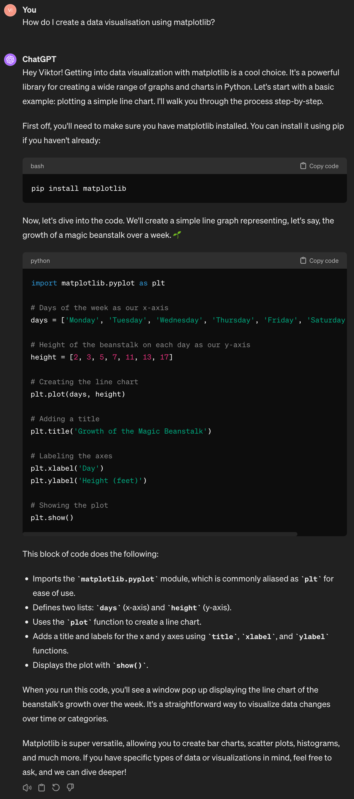
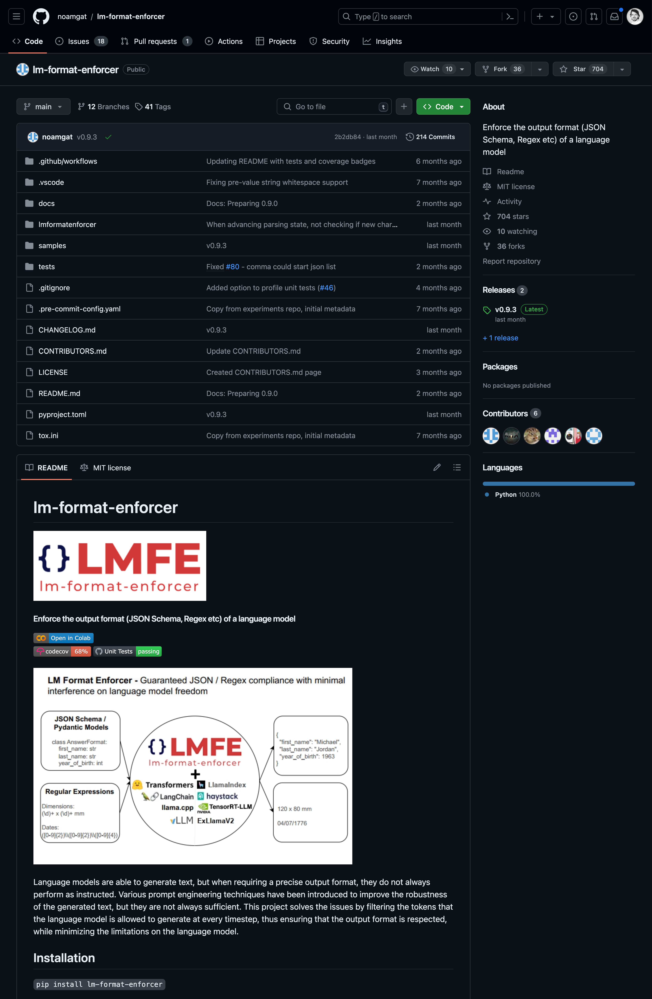
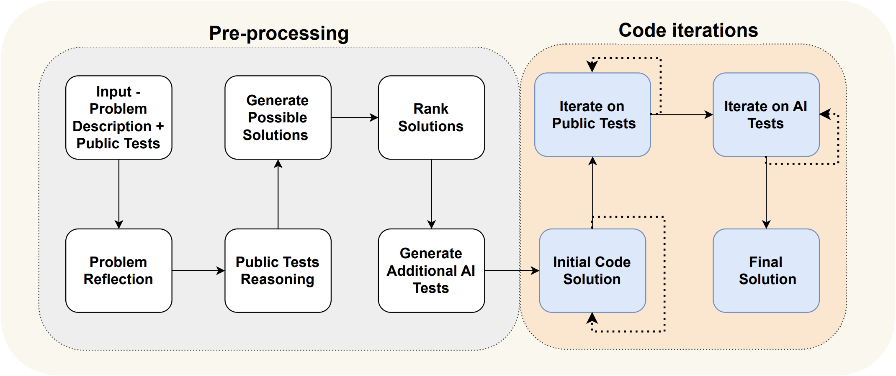
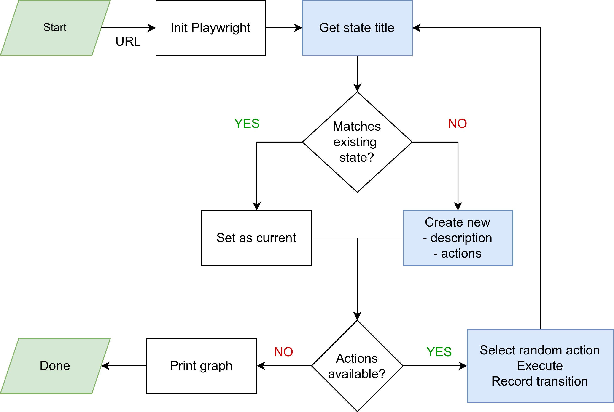
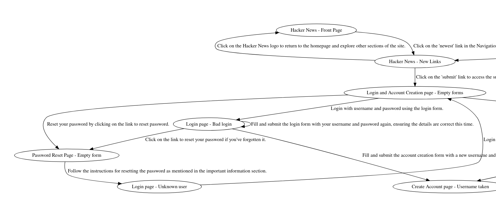
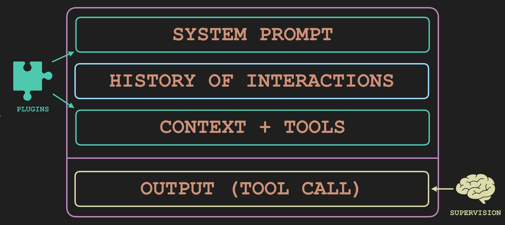
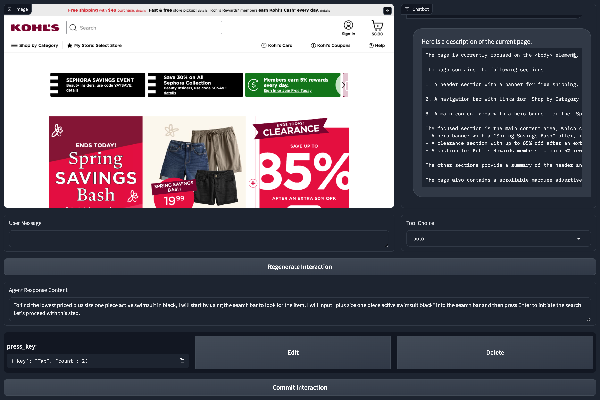

Agentic Systems Using LLMs
Viktor Nawrath

Viktor Nawrath
Leading the Tech Research team exploring uses of AI in QA and development
What are Agents?
What are Agents?
Definition: LLMs calling APIs
Examples: tiered by level of autonomy
Our Approach: generalist supervised agents
LLMs calling APIs
❌ LLMs NOT calling APIs

📝 Prompting a format
PROMPT = """Answer the following questions as best you can.
You have access to the following tools:
- run_command: Run a command in the terminal
- run_python: Run a Python script
Use the following format:
Question: the input question you must answer
Thought: you should always think about what to do
Action: the action to take, should be one of [{tool_names}]
Action Input: the input to the action
Observation: the result of the action
... (this Thought/Action/Action Input/Observation can repeat N times)
Thought: I now know the final answer
Final Answer: the final answer to the original input question
Begin!
Question: How do I create a data visualization using matplotlib?
Thought:
"""
🛠️ Tool/Function calling
response = client.chat.completions.create(
model="gpt-3.5-turbo-0125",
messages=[
{
"role": "user",
"content": "What's the weather like in Paris?",
}
],
tools=[
{
"type": "function",
"function": {
"name": "get_current_weather",
"description": "Get the current weather",
"parameters": {
"type": "object",
"properties": {
"location": {
"type": "string",
"description": "Which city?",
},
"unit": {
"type": "string",
"enum": ["celsius", "fahrenheit"]
},
},
"required": ["location"],
},
},
}
],
tool_choice="auto",
)
👮♂️ Constrained inference

Examples of Agents
💬 ChatGPT - chatbot with tools
🔗 Alpha Codium - flow engineering
Combination of LLMs and traditional code
🗺️ Web exploration

Creating Finite State Machines of Web Apps
🗺️ Web exploration
Resulting state machine graph
🧑🎓 Lab assignment auto-solver
def clone_repo():
# Clone the repository from Github
pass
def execute_step():
# Exectute step from the solution
pass
gather_tasks_prompt = """Please list all the tasks specified in the README.md file.
Provide a detailed description of each task,
so that it can be completed just by the description.
Make sure to split combined tasks into separate entries in your response.
Make sure to include all the necessary steps to complete each task.
Here's a readme file for an assignment:
README.md
```markdown
{readme}
```
"""
class Task(BaseModel):
"""Description of a single task to be done."""
title: str = Field(..., description="Title of the task.")
description: str = Field(..., description="Detailed description of the task.")
class Tasks(BaseModel):
"""Return a list of tasks specified in the README.md file."""
tasks: list[Task] = Field(
...,
description="List of tasks.",
)
def gather_tasks(respository_dir):
return (gather_tasks_prompt
| model.bind_tools([Tasks])
| output_parser
)
relevant_files_prompt = """Please select files yoy will need to read
or update in order to complete the following task.
Only list files that are directly relevant to the task.
Here's a task you are trying to solve:
```text
{task}
```
And here is a list of files in your repository:
{files}
"""
class RelevantFiles(BaseModel):
"""Return a list of files that will need to be read or modified in order to solve the task"""
files: list[str] = Field(..., description="List of relevant files")
def get_relevant_files():
return (relevant_files_prompt
| model.bind_tools([RelevantFiles])
| output_parser
)
solve_task_prompt = """Please provide a solution to the following task.
Pay close attention to all the instructions in the task description, and make sure your solution includes all the necessary steps to complete each instruction.
Here's a task you are trying to solve:
```markdown
{task}
```
And here is a list of files in your repository that are relevant to the completion of the task.
{files}
"""
class RunCommand(BaseModel):
"""Run a command in the terminal"""
type: str = Field("run_command", const=True)
command: str = Field(..., description="Command to run in the terminal")
class UpdateFile(BaseModel):
"""Update a file with the specified content"""
type: str = Field("update_file", const=True)
file: str = Field(..., description="Path to the file")
content: str = Field(..., description="New content for the file")
class Solution(BaseModel):
"""Solution to the task, with a list of descriptions for each step, and a list of actions to take."""
steps: Union[RunCommand, UpdateFile] = Field(
..., description="Solution to the task"
)
def solve_task():
return (solve_task_prompt
| model.bind_tools([Solution])
| output_parser
)
repo_url = "..."
repository_dir = clone_repo(repo_url)
tasks = gather_tasks(repository_dir)
for i, task in enumerate(tasks):
relevant_files = get_relevant_files(repository_dir, task, i)
solution = solve_task(repository_dir, task, relevant_files)
for step in solution:
execute_step(step)
🧑💻 Devin - fully autonomous agent
Our Approach to Agents
Our Approach to Agents
Generalist: provide functionality through plugins
Supervised: understanding and improving reliability
Observable: gathering data for training
Our Approach to Agents
Structure of an agent
Our Approach to Agents

UI for supervision